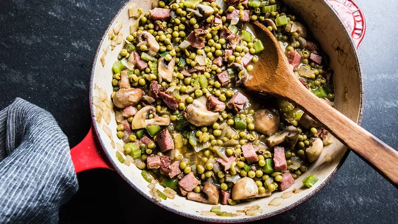

Roux Peas

Description
In this recipe, Toups uses petit pois peas, a can of baby peas that are a Southern favorite.
If you can't find them, substitute with one 16-ounce bag of frozen and thawed peas, or three cups of fresh peas, blanched and shocked.
Tasso is a piece of pork shoulder that is heavily seasoned and dried, then smoked for hours,
adding Cajun flavor to even the simplest dishes. It finds its way into all sorts of Louisiana staples,
like jambalaya, gumbo, and red beans and rice. Here, Toups throws it into his pot of peas and mushrooms for added meatiness.
Ingredients
- 2 tablespoons unsalted butter
- 1 medium yellow onion, small dice (1½ cups diced)
- 1 small green pepper, small dice (scant 2 cups diced)
- 1 celery stalk, small dice (⅓ cup diced)
- 2 garlic cloves, smashed into small pieces
- 2½ cups (8 ounces) quartered button mushrooms
- 2 cups (8 ounces) diced tasso ham
- 1¼ cups low-sodium chicken stock
- ¼ cup dark beer (such as porter or amber)
- 2 tablespoons instant roux (such as Tony Chachere's)
- Two 15-ounce cans petit pois peas, drained
- ⅛ teaspoon ground cayenne pepper, plus more to taste
- ½ teaspoon salt, plus more to taste
- 3 cups cooked long-grain rice (preferably Louisiana jasmine), to serve
Steps
- In a large, tall-sided saucepan, heat the butter over medium-high heat. Add the onion, green pepper,
celery and garlic, and cook until golden and lightly caramelized, 10 to 12 minutes. Add the mushrooms and tasso,
and cook another 2 minutes, stirring occasionally.
- Add the chicken stock and beer, and while the liquid is still cold, stir in the roux. Add the peas and cayenne,
and bring the mixture to a simmer, cooking at least 10 minutes and up to 20 minutes. Adjust the seasoning to taste with salt. Makes 6 cups of rouxed peas and can be stored in the refrigerator for up to 2 days. Spoon a little rice into bowls and a generous amount of rouxed peas over the top, and serve.
Return to main page